Gestión Avanzada de Límite de Crédito
Automatiza tus controles financieros, protege tus ingresos y da seguimiento eficiente a las cuentas corrientes y cheques.
¿Por qué elegir este módulo?
Un motor de control minimalista pero extremadamente potente para prevenir deudas incobrables.
Validación Estricta
Bloquea automáticamente las Órdenes de Venta si un cliente excede el crédito establecido o tiene la cuenta suspendida.
Delegación Configurable
El Aprobador puede habilitar desde Contabilidad > Ajustes que el Analista de Riesgo apruebe o rechace solicitudes en su nombre. Activable y revocable en cualquier momento.
Reglas de Descuento
Implementa restricciones en los descuentos máximos permitidos, requiriendo autorización para omitirlos.
Integración con Cheques
Integración nativa con l10n_latam_check para incorporar
los
montos de cheques pendientes al saldo deudor de forma automática.
Guía Práctica: ¿Cómo Funciona?
Un flujo de trabajo seguro, estructurado por roles y construido directamente dentro de Odoo.
Solicitud y Análisis de Crédito
Rol: Ventas / Analista de Riesgo
Todo comienza en el perfil del cliente. El equipo de ventas solicita abrir una Cuenta
Corriente indicando el límite deseado. Luego, el Analista de Riesgo
evalúa
la solicitud, adjunta la documentación financiera necesaria en Odoo y marca la cuenta
como
"Analizada".
Vista del Solicitante (Ventas)
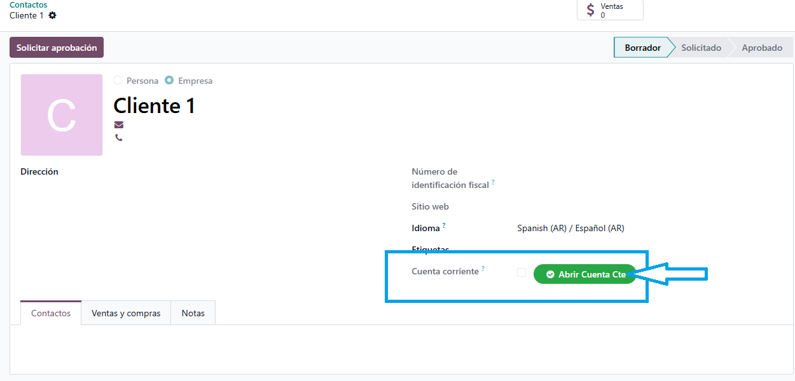
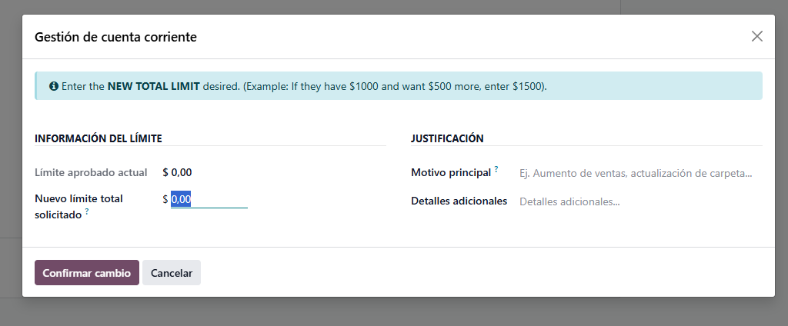
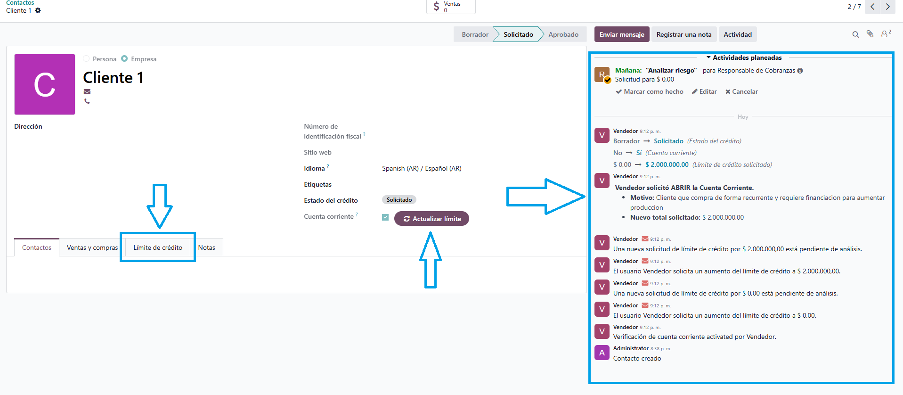
Vista del Analista de Riesgo
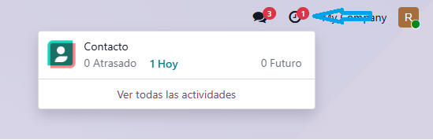
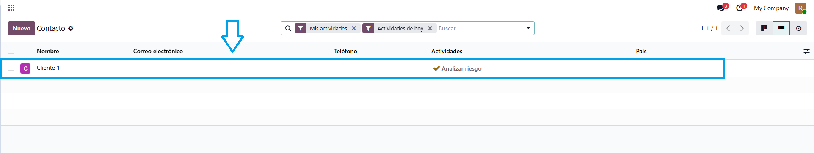

Aprobación Financiera Oficial
Rol: Gerencia / Aprobador
Para mantener la separación de responsabilidades, sólo los usuarios con
permisos de
Aprobador pueden establecer y confirmar el límite definitivo. Una vez validado, la
cuenta
corriente queda autorizada para operar y el límite de crédito es oficial.
Vista del Aprobador (Finanzas)
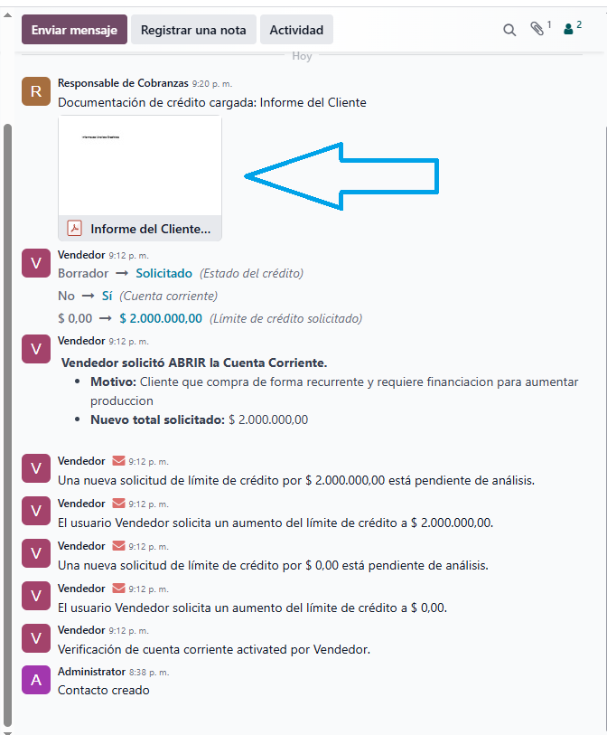
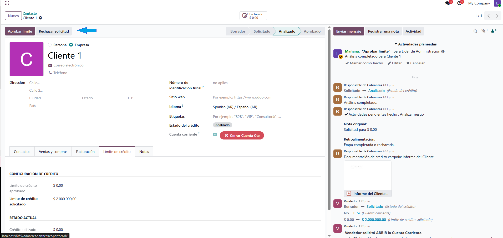
Ventas Ágiles e Informadas
Rol: Ventas
Al crear una nueva Orden de Venta, la interfaz mostrará instantáneamente un
panel con el
Límite Aprobado, Crédito Utilizado y Crédito
Disponible del cliente. El
equipo comercial siempre sabe dónde está parado antes de enviar la
cotización.
Permisos del Vendedor
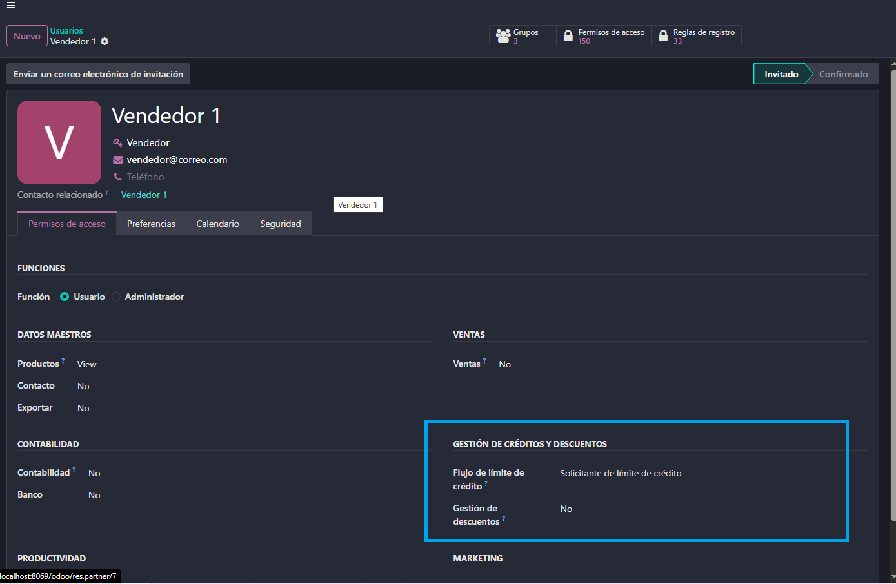
Permisos del Líder de Ventas
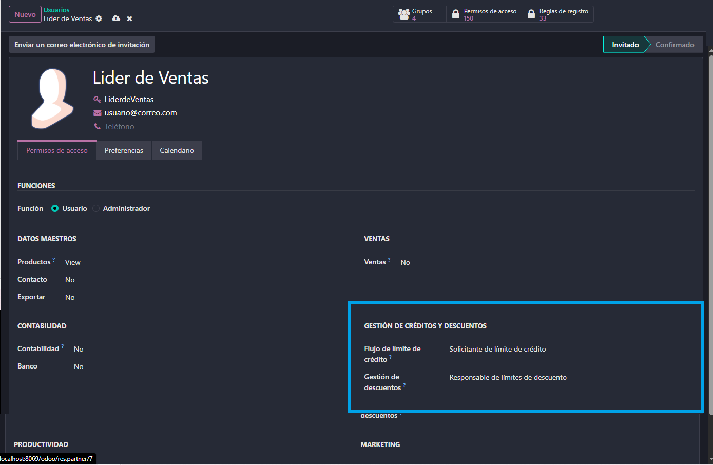
Validación y Bloqueo Automático
Rol: Sistema Automático
Si el comercial intenta "Confirmar" una orden cuyo monto supera el saldo disponible
(incluyendo la suma de facturas impagas y cheques de terceros sin cobrar), el sistema
bloqueará de forma estricta la confirmación. Adicionalmente,
los
Analistas
pueden suspender manualmente las cuentas morosas con el botón "Bloquear Cuenta".
Permisos del Responsable de Cobranzas
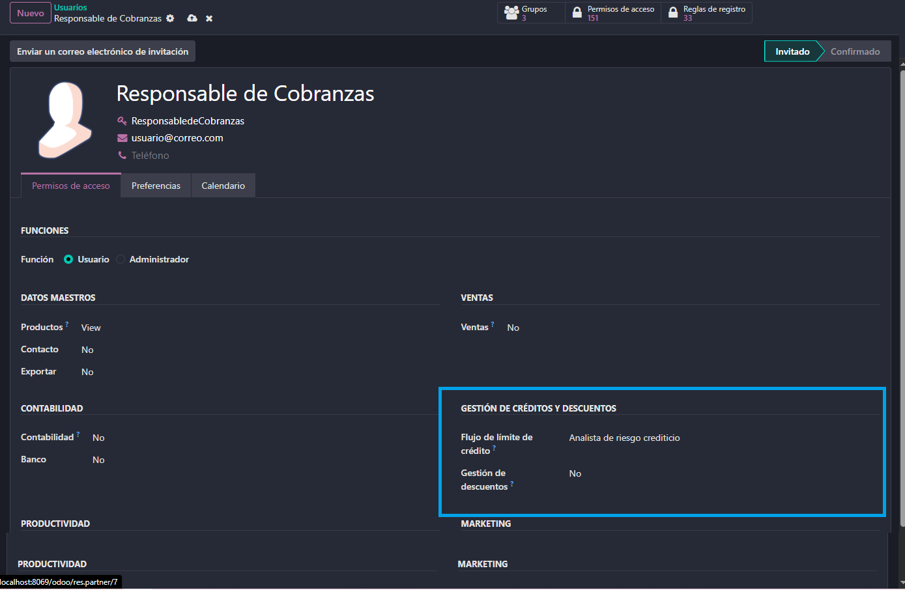
Permisos del Líder de Administración
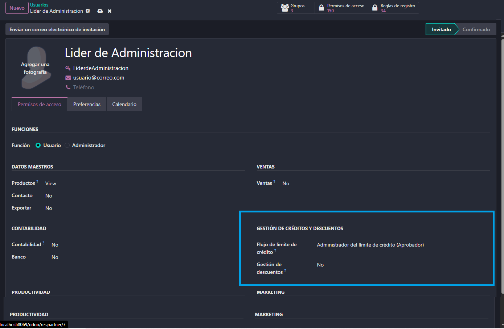
¿Listo para asegurar tus procesos de venta?
Gana tranquilidad operativa sabiendo que tu equipo comercial sigue estrictos lineamientos financieros.
¿Necesitas soporte técnico o una
implementación a
medida?
Contáctanos en tecnegia@gmail.com